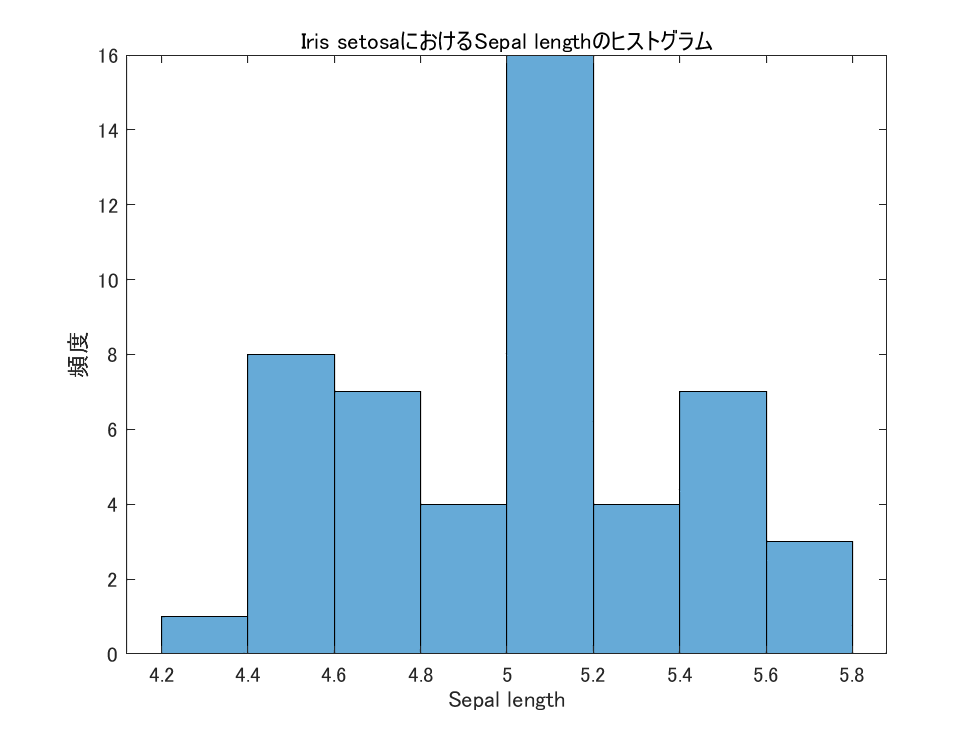
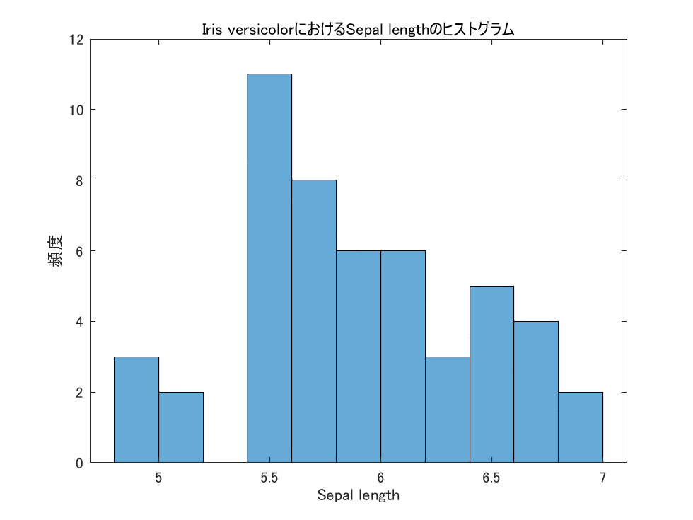
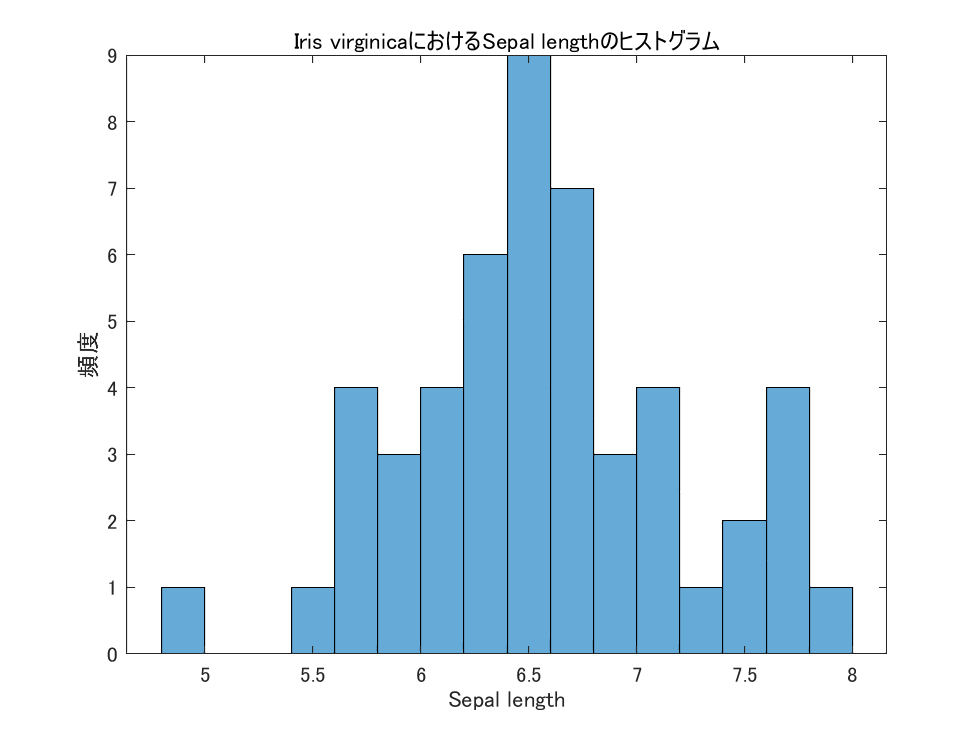
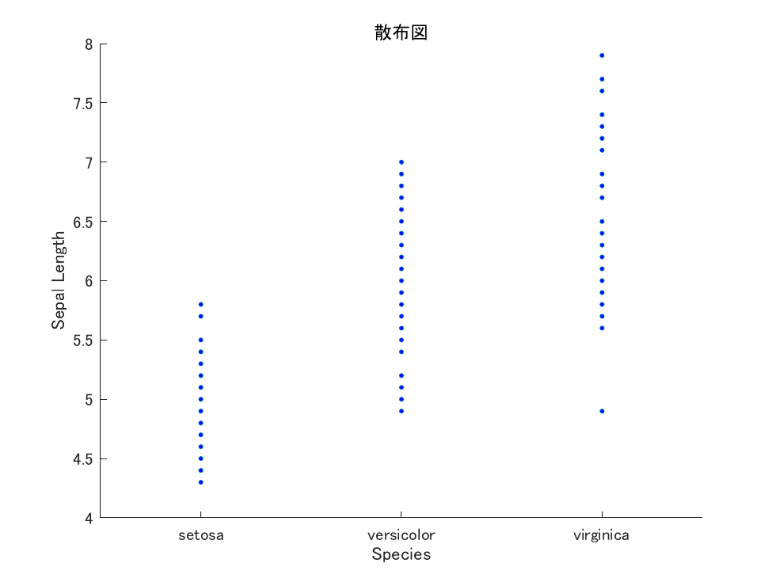
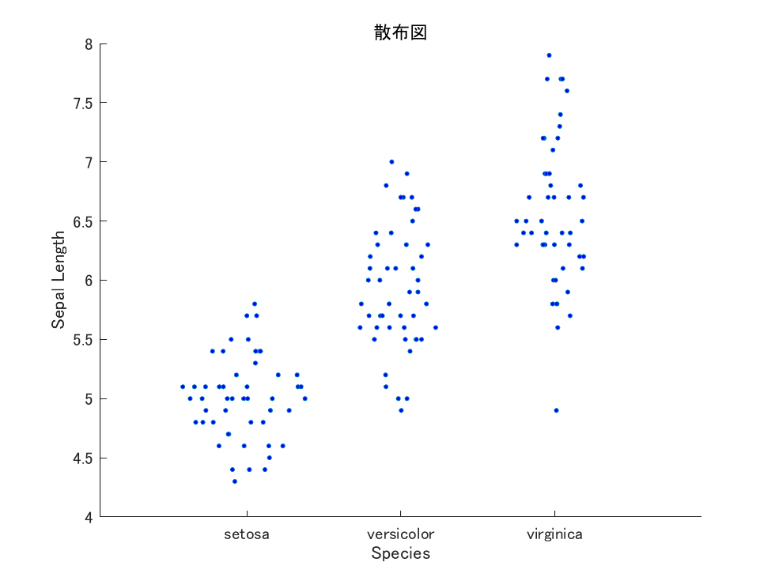
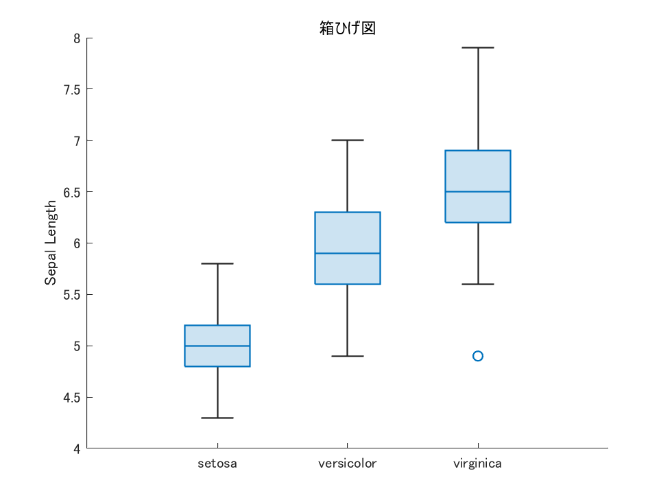

私たちは社会生活における様々な場面において、物事を比較、あるいは関連性を知りたい場面にしばしば遭遇するが、なんらかの観察やデータに基づく「認知」によって、次の判断や行動指針を得る。統計学は数学的な確率分布に基づいて、主観的な「勘」やこれまでの「信念」をできるだけ排除し、客観的な判断の指標を与えてくれる。ビッグデータや人工知能の時代が到来し、統計学の重要性はこれまで以上に高まるだろう。
農学研究においても処理や条件の効果を統計学的手法により、できるだけ客観的に判断することが好ましい。圃場Aと圃場Bでイネを栽培したとする。圃場Aで育てたイネのほうが収量が高かった。その主要因は何だろう。圃場Aの土壌窒素量が高かったのかもしれないし、圃場Aで栽培した品種が高収量品種だったのかもしれない。はたまた、ただの偶然でそのようなデータが得られた可能性もある。そのような違いや関連性を統計学的な理論に基づいて分析し、各要因の効果の有無や大きさを推定することで、正しい結論に到達することができる。統計学的な手法を理解していないと、苦労して得た実験データが統計解析の条件を満たしておらず、データが無駄になってしまった、ということも起こりうる。本演習では、演習を通して統計解析を経験し、どのようなケースでどのような統計手法を用いることが適切なのか、その判断の素地となる考え方を習得する。
MathWorks社のMATLABをインストールしましょう。まずは以下の九大キャンパスワイドライセンスを取得しましょう。学生は無料です。
https://jp.mathworks.com/academia/tah-portal/kyushu-university-31651502.html
「サインインして使い始める」から学生基本メールでアカウントを作成して、ログインしてください。ライセンスが自動付与されます。 ダウンロードしてインストールしましょう。
起動したらアドオンアイコンをクリックし、Statistics and Machine Learning Toolboxをインストールしてください。 全学ライセンスに含まれています。
四則演算は下記のように行う。%記号はコメントアウトとよび、%以降のコマンドは実行されない。
% 和の演算子は+
1+2
ans =
2
% 行末にセミコロン;をつけると、結果は出力されない。画面右側のワークスペースで結果を確認する。
1+2;
% 結果は表示されない。
% 差の演算子は-
3 - 5
-2
% 積の演算子は* (アスタリスク)
8* (-1)
-8
% 商の演算子は/ (スラッシュ)
-9 / 6
-1.5000
% あまりは mod() 関数で計算する。5割る3は以下のように計算する
mod(5, 3)
2
% べき乗の演算子は^ (パワー)
2 ^ 5
32
% 平方根はsqrt()関数
sqrt(2)
1.4142MATLABは電卓ではないので、通常、計算は変数に代入して処理する。変数に代入する演算子は =である。 変数名はアルファベットと数字の組み合わせで、ユーザーが自由に作れる。ただし、MATLABの中では使ってはいけない変数名があるので、注意する。
% 変数appleに120を代入
apple = 120;
apple % 変数appleに何が入っているか確認する。
% 結果 appleには120が入っている。
120
% 変数kosuuに5を代入
kosuu = 5;
kosuu
% 結果 kosuuには5が入っている。
5
% 変数apple * kosuuを計算し、計算結果をdaikinに代入する。
daikin = apple * kosuu
daikin
% 結果
600 データの集合\(A=\{7, 7, -5, 2, 8, 0, 7, -8, -1\}\)および集合\(B=\{-4 ,7, 0, 6, 2, -6, -4, 3, 3\}\)について考える。 MATLABではデータの集合をベクトルとして扱う。[ ]でかこい、, (カンマ)で区切るか、スペースで区切る
% ベクトルの作成
a = [7, 7, -5, 2, 8, 0, 7, -8, -1]; % 要素数9のベクトル
b = [-4 ,7, 0, 6, 2, -6, -4, 3, 3]; % 要素数9のベクトル
% ベクトルの和
c = a + b;
c
% 結果
3 14 -5 8 10 -6 3 -5 2
% ベクトルの各要素を二乗し、ベクトルdに代入 .^ が演算子です。
d = c .^2;
d
% 結果
9 196 25 64 100 36 9 25 4
% ベクトルの内積 dot()関数
e = dot(a, b);
e
% 結果
-6a .* bあるいはa ./ bとすると、Rではベクトルの各要素同士で積あるいは商を計算する
a .* b
% 結果
-28 49 0 12 16 0 -28 -24 -3
a ./ b
-1.7500 1.0000 -Inf 0.3333 4.0000 0 -1.7500 -2.6667 -0.3333
% 0で割ることはできないので、その要素は無限大となっていることを確認線形代数の教科書では、\(\vec{a}\)、\(\vec{b}\)などのベクトルは小文字の太字\(\mathbf{a}\)、\(\mathbf{b}\)で示す。 1行\(m\)列の行列を行ベクトルあるいは横ベクトルとよぶ。
\[ \mathbf{a}= [a_1, a_2, a_3, a_4, \cdots , a_m] \]
\(n\)行1列の行列を列ベクトルあるいは縦ベクトルとよぶ。
\[ \mathbf{b} = \left[ \begin{array}{c} b_1 \\ b_2 \\ \vdots \\ b_n \end{array} \right] \]
MATLABでは列はカンマ、行はセミコロン; にて区切る。
% 横ベクトル
a = [1, 2, 3]
% 縦ベクトル
b = [1; 2; 3]
% 違いを確認してください行列は大文字の太字\(\mathbf{A}\)、\(\mathbf{B}\)にて示す。 行列の行と列を入れ替えたものを転置ベクトルと呼び、右上にTを付す。(教科書によってはプライムを付ける)。
\[ \mathbf{b}^{T}=[b_1, b_2,, \cdots , a_n] \]
MATLABでは以下のようにして行列を作成する。
A = [1, 2, 3; 4, 5, 6; 7, 8, 9]
1 2 3
4 5 6
7 8 9
% 自分で数字をタイプするなら、エンターで行を移動してもよいが、プログラミングには適さない。
A = [1 2 3
4 5 6
7 8 9]複数のベクトルをつないでも行列を作成できる。要素数は同じでなければならない。
% 横ベクトルsと横ベクトルtを作成
s = [1, 2, 3];
t = [4, 5, 6];
% ベクトルsとベクトルtを行列として連結（行として連結）
matrix = [s; t]
1 2 3
4 5 6
% 横ベクトルsと横ベクトルtを作成
s = [7; 8; 9];
t = [10; 11; 12];
% ベクトルsとベクトルtを行列として連結（列として連結）
matrix = [s, t]
7 10
8 11
9 12% 横ベクトルaと横ベクトルbを行として連結し、行列Xを作成しなさい
a = [7, 7, -5, 2, 8, 0, 7, -8, -1] ;
b = [-4 ,7, 0, 6, 2, -6, -4, 3, 3];
X = [a; b]Matlabで行列の転置を行うには、単に転置演算子 ’ を使用します。転置演算子 ’ を行列の後に付けると、その行列の転置が生成されます。
% 行列Xの転置行列をYに代入
Y = X'’
\(\mathbf{X}\)は(2 \(\times\) 9)の行列、\(\mathbf{Y}\)は(9 \(\times\) 2)の行列である。 \(\mathbf{X}\mathbf{Y}\)は(2 \(\times\) 9)\(\times\)(9 \(\times\) 2)=(2 \(\times\) 2)の 行列となる。行列の積は演算子*にて得ることができる。逆行列はinv()関数にてえる。
% 行列の積
Z = X * Y
305 -6
-6 175
% 逆行列
W = inv(Z)
0.0033 0.0001
0.0001 0.0057\(\mathbf{Z}^{-1}\)と\(\mathbf{Z}\)の積により、単位行列\(\mathbf{I}\)を得る。 \[ \mathbf{Z}^{-1}\mathbf{Z}=\mathbf{I} =\left[ \begin{array}{cc} 1 & 0 \\ 0 & 1 \\ \end{array} \right] \]
W * Z
1.0000 -0.0000
0 1.0000次は表形式のテキストデータを読み込んで解析を行う。 ここでは英国の統計学者・植物学者であったロナルド・フィッシャー氏が1936年に発表したアヤメ(Iris)三種 Iris setosa、Iris versicolor、Iris virginica の種分化に関する論文から、種別の花弁およびがくに関する多変量データを紹介する。(Fisher RA. 1936. The use of multiple measurements in taxonomic problems. Annals of Eugenics 7:179-188.)
MATLABでは標準データが組み込まれているので以下のコマンドで呼び出す。
load fisheriris;すると、meas行列とspecies行列が読み込まれ。 ワークスペースを見ると各オブジェクトの特徴やデータ型が表示されています。speciesは文字列を扱うことができるcell型というオブジェクトです。ダブルクリックすると、中身が見えます。
R2013から導入されたテーブル型が便利です。テーブル型に変換してから解析するのがbetterです。
% 行列をテーブル型に変換 (一行で入らないので ... という行末の省略符号 をもちいています。)
measT = array2table(meas, 'VariableNames', ...
{'SepalLength', 'SepalWidth ', 'PetalLength', 'PetalWidth '});
% カテゴリカル型に変換
Species = categorical(species)
irisT = addvars(measT, Species);最初の数行をhead()関数で表示させる。
head(irisT)
% 以下は結果
SepalLength SepalWidth PetalLength PetalWidth Species
___________ ___________ ___________ ___________ _______
5.1 3.5 1.4 0.2 setosa
4.9 3 1.4 0.2 setosa
4.7 3.2 1.3 0.2 setosa
4.6 3.1 1.5 0.2 setosa
5 3.6 1.4 0.2 setosa
5.4 3.9 1.7 0.4 setosa SepalLengthは花弁の長さ、SepalWidthは花弁の幅、PetalLengthはがくの長さ、PetalWidthは がくの幅、Speciesは種名をしめし、それぞれの列の名(列ラベル名)である。
テーブル名に続いて、ドット(.)でアクセスします。
% SepalLength 列にアクセス
irisT.SepalLengthテーブル名(行、列)でアクセスします
%irisTの6行2列のデータを取り出す。
irisT(6, 2)
%irisTの1-6行2列のデータを取り出す。
irisT(1:6, 2)
% irisTの2列目を取り出す。
irisT(: , 2)
% irisTの6行目を取り出す。
irisT(6 , :)
%irisTの''Species''列を取り出す。
irisT(: , "Species")条件に合っていればTrue (1)、異なっていればFalse (0)の配列を得て、出力をコントロールする。
% irisTのSpecies列が"setosa"であるかを判定する。
irisT.Species == "setosa"
% setosaRows に代入する
setosaRows = irisT.Species == "setosa";
% setosaRowsのうち、1の行は出力、0の行は出力しないので、
% 結果的にirisSetosaには setosaのみが入る。 (ワークスペースで確認しよう)
irisSetosa = irisT(setosaRows, : );
% ワンライナー (わかりにくいけども)
irisSetosa = irisT(irisT.Species == "setosa", : );データフレームirisTに対して、 - 問題1
setosaの花弁長(SepalLength)をSLsetosaに代入せよ。 - 問題2
versicolorの花弁長(SepalLength)をSLversicolorに代入せよ。 -
問題3
virginicaの花弁長(SepalLength)をSLvirginicaに代入せよ。
SLsetosa = irisT(irisT.Species == "setosa", "SepalLength" );
SLversicolor = irisT(irisT.Species == "versicolor", "SepalLength" );
SLvirginica = irisT(irisT.Species == "virginica", "SepalLength");プロット図にてデータの概略をつかむ。 ####
ヒストグラム
前節にて得たSLsetosa、SLversicolor、SLvirginicaについて、ヒストグラムを作成する。MATLABではhistogram()関数にてヒストグラムを容易に作成できる。
データの区間を階級といい、’BinWidth’オプションにて幅を指定する。今回は、階級は0.2幅で作成する
% histogram()関数で作成する
h = histogram(SLsetosa.SepalLength, 'BinWidth', 0.2);
xlabel('Sepal length'); % x軸のラベル
ylabel('頻度'); % y軸のラベル
title('Iris setosaにおけるSepal lengthのヒストグラム'); % グラフのタイトル
% ヒストグラムデータを取得
binCounts = h.BinCounts; % 階級ごとのデータカウント
binEdges = h.BinEdges; % 階級の境界値です。以下SLversicolor、SLvirginicaについて行う。ヒストグラムを見ると、大まかにsetosa, versicolor, virginicaの順で大きくなっていく様子がわかる。
  
図. 花弁の長さのヒストグラム. (a) setosa, (b) versicolor, (c)virginica
散布図では、x-y平面上にデータをプロットし、二者間のデータの関連を図示することができる。scatter()関数にて容易に得ることができる。
x = irisT.Species
y = irisT.SepalLength
scatter(x, y, 'SizeData', 5, 'MarkerFaceColor', 'blue');
xlabel('Species'); % X軸のラベルを設定
ylabel('Sepal Length'); % Y軸のラベルを設定
title('散布図'); % グラフのタイトルを設定
図. 散布図
点が重なっている場合、データの数がわかりにくい。この場合はswarmchart()をもちいる。
x = irisT.Species
y = irisT.SepalLength
swarmchart(x, y, 'SizeData', 5, 'MarkerFaceColor', 'blue');
xlabel('Species'); % X軸のラベルを設定
ylabel('Sepal Length'); % Y軸のラベルを設定
title('散布図'); % グラフのタイトルを設定
図. 散布図2
使い方のわからない関数が出てきた場合、画面右上のドキュメンテーションの検索を確認しよう
一次元データのみで作成したい場合は、ダミー変数として1のみのベクトル(いちベクトル)を用意し、xに与えてあげる。
% テーブル型オブジェクトのirisTのSepalLength列の要素数をカウントする
youso = length(irisT.SepalLength);
% 要素がすべて1である1(いち)ベクトルをones(1, x)関数にて作成する。
ichi_vector = ones(1, youso)
% scatter()関数で散布図を作成 (データが重なっている場合は、いくつでーたがあるのかわかりにくい)
scatter(ichi_vector, irisT.SepalLength)
% swarmchart(x, y)関数を用いた場合は、データの重なりをずらして表示する
swarmchart(ichi_vector, irisT.SepalLength)
xlabel('All data of the SepalLength'); % X軸のラベルを設定
ylabel('Sepal Length'); % Y軸のラベルを設定
title('散布図'); % グラフのタイトルを設定箱ひげ図(box plot)は、データの最小値、 第1四分位点、中央値、第3四分位点、最大値の概略を示す図である。外れ値に対して頑強であり、外れ値に影響を受けて平均値や分散が影響を受けにくい。 散布図と同様、xとyに対応するベクトルを入力する。
boxchart(Species, irisT.SepalLength)
ylabel('Sepal Length'); % Y軸のラベルを設定
title('箱ひげ図'); % グラフのタイトルを設定
% おまけ
m = groupsummary(irisT.SepalLength, Species, 'mean')
hold on
plot(m,'-o')
hold off
図. ボックスプロット(箱ひげ図)
散布図にて、大まかなデータの分布をつかんだ後は、「統計量」にて特徴を要約した値をえる。 #### 総和 Rでは数字の集合をベクトルに代入して起き、sum()関数により求める。ベクトル\(a\)の各要素の総和を\(T_a\)、 ベクトル\(b\)の各要素の総和を\(T_b\)とすると、
% ベクトルを用意
a = [7, 7, -5, 2, 8, 0, 7, -8, -1] ;
b = [-4 ,7, 0, 6, 2, -6, -4, 3, 3];
% ベクトルaの各要素の総和
Ta = sum(a)
17
% ベクトルbの各要素の総和
Tb = sum(b)
7のように計算する。
平均値は算術平均(arithmetic mean)、幾何平均(geometric mean)、調和平均(harmonic mean)などがある。算術平均を\(m_a\)、幾何平均を\(m_g\)とおくと、要素数が\(n\)の場合
\[ m_a = \sum_{i=1}^n a_i = a_1 + a_2 + \cdots + a_n \]
\[
m_g = \sqrt[n]{\prod_{i=1}^{n} a_i} = \sqrt[n]{a_1 \times a_2 \times
\cdots \times a_n}
\]
と計算する。算術平均をよく用いる。mean()関数にて計算する。
mean(a)
1.8889
%中央値
%データを下からあるいは上から数えて真ん中の値を中央値と呼ぶ。データ数が偶数個の場合は中央の二つの値の平均値を用いる。median()関数にて求める。
median(a)
2
% 最大値
% データの中で最も大きい値。max()関数にて求める。
max(a)
8
%最小値
データの中で最も小さい値。min()関数にて求める。
min(a)
-8各データの平均値からのずれを偏差とよぶ。データの集合\(A = \{a_1, a_2, \cdots, a_n\}\)について \(A\)の平均値を\(m_a = \sum_{i=1}^{n} a_i/n\)とおくと、偏差の集合\(D\)は \[ D = \{a_1 - m_a, a_2 - m_a, \cdots a_n - m_a\} \] とかける。
% 平均からの偏差
d = a - mean(a)
5.1111 5.1111 -6.8889 0.1111 6.1111 -1.8889 5.1111 -9.8889 -2.8889偏差を二乗したもの(偏差平方)の和を偏差平方和(sum of square (SS))という。平均値からのズレの二乗(またの言い方を平方)和だから、平均値から各データがバラけるほど、偏差平方和の値はどんどん大きくなる。偏差平方和が大きいほどデータがばらついていると言えそうだ。 \[ SS = \sum_{i=1}^{n} (a_i - m_a)^2 \]
% 偏差平方和
SS = sum( (a - mean(a) ) .^2 ) 偏差平方和は平均値周辺のデータのバラつきの度合いをしめしたものだが、データ数が多いほどどんどん大きくなる。偏差平方和SSをデータ数\(n\)で割ったものを標本分散 (sample variance)という。 データ1つあたりのバラつきを評価できる。標本から母分散を推定する場合、偏差平方和SSを\(n-1\)で割った不偏標本分散 (unbiased sample variance)を用いる。
実験データの解析では通常、不偏分散を標本分散として扱い、\(s^2\)とおく。SSを\(n\)で割った値の期待値は母分散と等しくないが、SSを\(n-1\)で割った値の期待値は母分散と等しい。これを不偏性という。
\[ s^2 = \cfrac{\sum_{i=1}^{n} (a_i - m_a)^2}{n-1} = \cfrac{SS}{n-1} \]
また、分散の平方根を標準偏差 (Standard deviation)といい、ここでは\(s=\sqrt{s^2}\)にて示す。標準偏差はデータの単位と同じ単位を持つ。
% 9人の身長データ入力
Height_m = [1.70, 1.63, 1.53, 1.88, 1.72, 1.77, 1.64, 1.67, 1.59]
% 9人の身長の平均
mean(Height_m)
% 偏差 Height_d
Height_d = Height_m - mean(Height_m)
% 偏差平方和 Height_SS
Height_SS = sum(Height_d .^2)
% 標本不偏分散を推定
vars_dankai = Height_SS /(9-1)
0.0106
% データHeight_mから一つの数式で計算
vars_ikkai = sum((Height_m - mean(Height_m)) .^2)/(9-1)
0.0106通常はvar()関数を用いる。
% var()関数を用いて不偏標本分散を計算し、Height_varに代入
Height_var = var(Height_m)
0.0106
% 標本分散の平方根を計算し、Height_sdに代入
Height_sd = sqrt(Height_var)
0.1030おなじ9人に由来する体重のデータWeight_kgについて、平均、標本分散、標準偏差を 計算してみよう。
Weight_kg = [58.4, 62.3, 51.0, 71.0, 63.4, 65.1, 59.3, 62.9, 59.0]
% 平均
mean(Weight_kg)
61.37778
% 標本分散
var(Weight_kg)
30.02944
% 標準偏差
sqrt(var(Weight_kg))
5.479913身長の標準偏差は 0.1030102だが、体重の標準偏差は5.479913であった。体重のほうがよりばらついて いるだろうか。データの桁数が大きいほど、標準偏差が大きく見える。
データ同士の変動を比較したいばあい場合、変動係数 (coefficient of variation)にて比較するのが便利である。変動係数は標準偏差を平均値で割ってもとめる。 \[ CV = s / \bar{a_i} \] ただし、\(\bar{a_i}\)は\(a_i\)の平均値である。
身長の変動係数および体重の変動係数を比較すると
% 身長の変動係数
sqrt(var(Height_m))/mean(Height_m)
0.0612751
% 体重の変動係数
sqrt(var(Weight_kg))/mean(Weight_kg)
0.08928171このデータでは体重のほうが変動係数は大きい、すなわちばらつきの度合いが大きい。
データを平均および標準偏差にて調整する標準化(standarization)をおこない、標準化得点(Zスコア)を求める。
あるn個のデータの集合\(X=\{X_1, X_2 \cdots X_n\}\)が平均\(\mu\)、標準偏差\(\sigma\)を持つとき、 \(i\)番目のデータの標準化スコア\(Z_i\)は \[ Z_i = \frac{X_i - \mu}{\sigma} \] にて求める。得られた集合\(Z = \{Z_1, Z_2, \cdots Z_n \}\)について、平均\(\mu_Z\)は0、分散\(\sigma_{Z}^2\)は1となる \[ \mu_Z = 0 \quad \sigma_{Z}^2 = 1、 \]
もっとも平均身長および平均体重より離れているのは何番目のデータか。
% 9人の身長データ入力
Height_m = [1.70, 1.63, 1.53, 1.88, 1.72, 1.77, 1.64, 1.67, 1.59]
% 平均値を計算し、Height_meanに代入
Height_mean = mean(Height_m)
% 標準偏差を計算し、Height_sdに代入
Height_sd = sqrt(var(Height_m))
% 標準化スコアを計算し、Height_zに代入
Height_z = (Height_m - Height_mean) / Height_sd
% 結果の表示
Height_z
0.1833690 -0.4961750 -1.4669522 1.9307680 0.3775245 0.8629131 -0.3990973
-0.1078641 -0.8844859% 9人の体重データ入力
Weight_kg = [58.4, 62.3, 51.0, 71.0, 63.4, 65.1, 59.3, 62.9, 59.0]
% 平均値を計算し、Weight_meanに代入
Weight_mean = mean(Weight_kg)
% 標準偏差を計算し、Weight_sdに代入
Weight_sd = sqrt(var(Weight_kg))
% 標準化スコアを計算し、Weight_zに代入
Weight_z = (Weight_kg - Weight_mean) / Weight_sd
% 結果の表示
Weight_z
[1] -0.5433988 0.1682914 -1.8937852 1.7559079 0.3690245 0.6792484 -0.3791626
[8] 0.2777822 -0.4339080以上の結果から、Height_zおよびWeight_zの絶対値が一番大きいのは、4番目のデータである。
matlabの計算に用いたコマンド及び計算結果について示せ。 - setosa の花弁長 (Sepal.Length) のヒストグラム作成せよ。 - setosa の花弁長 (Sepal.Length)の平均、不偏標本分散、変動係数を示せ。 - setosa、versicolor, virginica の花弁長において、また最大の変動係数を持つ種は何か。
下記の課題をレポート課題として提出する。課題で用いるデータはインターネット上から直接読み込む。
URL = "https://raw.githubusercontent.com/qikushu/stat/master/kadai_R.txt"
kadai_data = readtable(URL)抵抗性イネ品種ADR52と感受性品種台中65の交雑F2集団48個体について、ウンカ類を放飼し5日後 (five days-after-infestation: DAI5)の昆虫の死亡率が記載されている。染色体6に座乗するDNAマーカーS00310, P493ATc, RM204にて遺伝子型(1:台中65号ホモ接合型, 3:ヘテロ接合型, 2: ADR52ホモ接合型)が判明している。
レポートはワードやエクセルなどで作成し、計算に用いたRプログラムおよび得られた結果を記載すること。得られた図は画面キャプチャーし、パワーポイントに貼り付け、印刷し、はさみとのりで 台紙に張り付けて、何の図なのか図のタイトルを記載したうえで、あわせて提出すること。 パソコンが得意な人は、得られたプロット図をR上でPDF形式等で保存し、パワーポイントに張り付け後、図のタイトルを記載し、綺麗に整形後に提出してもよい。
% テーブル型オブジェクトのkadai_dataのDAI5列の要素数をカウントする
youso = length(kadai_data.DAI5);
% 要素がすべて1である1(いち)ベクトルをones(1, x)関数にて作成する。
ichi_vector = ones(1, youso)
% scatter()関数で散布図を作成 (データが重なっている場合は、いくつでーたがあるのかわかりにくい)
scatter(ichi_vector, kadai_data.DAI5)
% swarmchart(x, y)関数を用いた場合は、データの重なりをずらして表示する
swarmchart(ichi_vector, kadai_data.DAI5)
xlabel('All data of the DAI5'); % X軸のラベルを設定
ylabel('DAI5'); % Y軸のラベルを設定
title('DAI5の全データに関する散布図'); % グラフのタイトルを設定